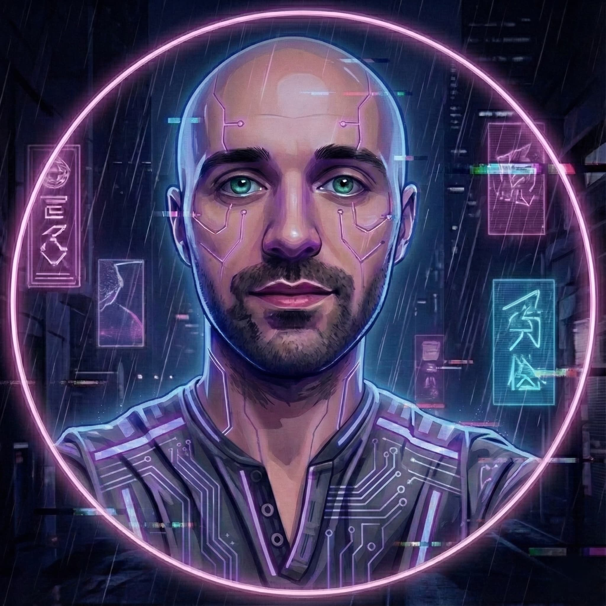

Hi, I'm Filipe Mota
(BlackSpirits)
Programmer · Open-source contributor · pt-PT translator
Born to explore. Coded to connect. 🌍
Language:
📸 Capturing moments & memories
☕ Tech • Travel • Coffee
🚀 Wanderer at heart

About me
I'm a programmer and tech enthusiast, also working as a translator/reviewer for several projects in European Portuguese (pt-PT).
I develop and maintain Pipocas.tv and contribute as a moderator at TheTVDB.
I'm also passionate about the Seventh Art — cinema, movies, series, and everything related to visual storytelling.
Core focus
- Automation & scripting Browser automation, helpers and productivity workflows.
- Localization (pt-PT) Translation and review work focused on natural European Portuguese.
- Media platforms & metadata Subtitles, cataloguing, metadata quality and streaming-related tooling.
- Open-source tooling Practical tools and improvements shared with the community.
Projects
From Instagram?
If you arrived here from Instagram, welcome.
This is where my technical side lives — scripts, projects and contributions.
The same traveler, just in code form.
Connections
- GitHubCode, open-source projects and technical experiments.
- Pipocas.tvPortuguese subtitles community platform.
- TheTVDBMetadata moderation and Portuguese title contributions.
- InstagramTravel, moments and the more personal side.
- SimklWhat I watch — movies, series and more.
- EmailFor contact, questions or collaboration.